GaussianProcess¶
(Source code, png, hires.png, pdf)
{kind=link}
{kind=link}

-
class
GaussianProcess(*args)¶ Gaussian processes.
- Available constructor:
GaussianProcess(trend, secondOrderModel, mesh)
GaussianProcess(trend, covarianceModel, mesh)
GaussianProcess(secondOrderModel, mesh)
GaussianProcess(covarianceModel, mesh)
Parameters: trend :
TrendTransformTrend function of the process. By default the trend is null.
secondOrderModel :
SecondOrderModelStationary second order model that insures the coherence between the covariance function and the spectral density function.
covarianceModel :
CovarianceModelTemporal covariance model
 .
.mesh :
MeshMesh
 over which the domain
over which the domain  is discretized.
is discretized.Notes
GaussianProcess creates the processes,
 where
where  ,
from their temporal covariance function
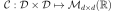, which writes, in
the stationary case: 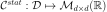. A
process is normal, if all its finite dimensional joint distributions are
normal (See the method
,
from their temporal covariance function
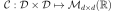, which writes, in
the stationary case: 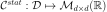. A
process is normal, if all its finite dimensional joint distributions are
normal (See the method isNormal()for a detailed definition).The gaussian processes may have a trend: in that case, the Gaussian process is the sum of the trend function 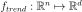 and a zero-mean Gaussian process.
If the zero-mean process is stationary, in order to manipulate the same Gaussian process through both the temporal and spectral views, it is necessary to create a second order model secondOrderModel that insures the coherence between the covariance function
 and the spectral density
function 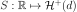. 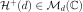
is the set of
and the spectral density
function 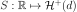. 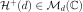
is the set of  -dimensional positive definite hermitian matrices.
-dimensional positive definite hermitian matrices.Examples
>>> import openturns as ot >>> ot.RandomGenerator.SetSeed(0) >>> # Default dimension parameter to evaluate the model >>> defaultDimension = 1 >>> # Amplitude values >>> amplitude = [1.0]*defaultDimension >>> # Scale values >>> scale = [1.0]*defaultDimension >>> # Second order model with parameters >>> myModel = ot.ExponentialCauchy(scale, amplitude) >>> # Time grid >>> tmin = 0.0 >>> step = 0.1 >>> n = 11 >>> myTimeGrid = ot.RegularGrid(tmin, step, n) >>> size = 100 >>> myProcess = ot.GaussianProcess(myModel, myTimeGrid)
Methods
getClassName()Accessor to the object’s name. getContinuousRealization()Get a continuous realization. getCovarianceModel()Get the covariance model. getDescription()Get the description of the process. getDimension()getFuture(*args)Prediction of the  future iterations of the process.
future iterations of the process.getId()Accessor to the object’s id. getInputDimension()Get the dimension of the domain .getMarginal(*args)Get the  marginal of the random process.
marginal of the random process.getMesh()Get the mesh. getName()Accessor to the object’s name. getOutputDimension()Get the dimension of the domain .getRealization()Get a realization of the process. getSample(size)Get  realizations of the process.
realizations of the process.getShadowedId()Accessor to the object’s shadowed id. getSpatialDimension()getTimeGrid()Get the time grid of observation of the process. getTrend()Get the trend function. getVisibility()Accessor to the object’s visibility state. hasName()Test if the object is named. hasVisibleName()Test if the object has a distinguishable name. isComposite()Test whether the process is composite or not. isNormal()Test whether the process is normal or not. isStationary()Test whether the process is stationary or not. isTrendStationary()Tell if the process is trend stationary or not. setDescription(description)Set the description of the process. setMesh(mesh)Set the mesh. setName(name)Accessor to the object’s name. setSamplingMethod(samplingMethod)Set the used method for getRealization. setShadowedId(id)Accessor to the object’s shadowed id. setTimeGrid(timeGrid)Set the time grid of observation of the process. setVisibility(visible)Accessor to the object’s visibility state. -
__init__(*args)¶ x.__init__(…) initializes x; see help(type(x)) for signature
-
getClassName()¶ Accessor to the object’s name.
Returns: class_name : str
The object class name (object.__class__.__name__).
-
getContinuousRealization()¶ Get a continuous realization.
Returns: realization :
FunctionAccording to the process, the continuous realizations are built:
- either using a dedicated functional model if it exists: e.g. a functional basis process.
- or using an interpolation from a discrete realization of the process on
: in dimension
 , a linear interpolation and in
dimension
, a linear interpolation and in
dimension  , a piecewise constant function (the value at a
given position is equal to the value at the nearest vertex of the mesh of
the process).
, a piecewise constant function (the value at a
given position is equal to the value at the nearest vertex of the mesh of
the process).
-
getCovarianceModel()¶ Get the covariance model.
Returns: covarianceModel :
CovarianceModelTemporal covariance model
.
-
getDescription()¶ Get the description of the process.
Returns: description :
DescriptionDescription of the process.
-
getFuture(*args)¶ Prediction of the
future iterations of the process.Parameters: stepNumber : int,

Number of future steps.
size : int,
 , optional
, optionalNumber of futures needed. Default is 1.
Returns: prediction :
ProcessSampleorTimeSeries future iterations of the process.
If  , prediction is a
, prediction is a TimeSeries. Otherwise, it is aProcessSample.
-
getId()¶ Accessor to the object’s id.
Returns: id : int
Internal unique identifier.
-
getInputDimension()¶ Get the dimension of the domain
.Returns: n : int
Dimension of the domain
: .
-
getMarginal(*args)¶ Get the
marginal of the random process.Parameters: k : int or list of ints

Index of the marginal(s) needed.
Returns: marginals :
ProcessProcess defined with marginal(s) of the random process.
-
getName()¶ Accessor to the object’s name.
Returns: name : str
The name of the object.
-
getOutputDimension()¶ Get the dimension of the domain
.Returns: d : int
Dimension of the domain
.
-
getRealization()¶ Get a realization of the process.
Returns: realization :
FieldContains a mesh over which the process is discretized and the values of the process at the vertices of the mesh.
-
getSample(size)¶ Get
realizations of the process.Parameters: n : int,

Number of realizations of the process needed.
Returns: processSample :
ProcessSample realizations of the random process. A process sample is a
collection of fields which share the same mesh  .
.
-
getShadowedId()¶ Accessor to the object’s shadowed id.
Returns: id : int
Internal unique identifier.
-
getTimeGrid()¶ Get the time grid of observation of the process.
Returns: timeGrid :
RegularGridTime grid of a process when the mesh associated to the process can be interpreted as a
RegularGrid. We check if the vertices of the mesh are scalar and are regularly spaced in but we don’t check if the connectivity of the mesh is conform
to the one of a regular grid (without any hole and composed of ordered
instants).
but we don’t check if the connectivity of the mesh is conform
to the one of a regular grid (without any hole and composed of ordered
instants).
-
getTrend()¶ Get the trend function.
Returns: trend :
TrendTransformTrend function.
-
getVisibility()¶ Accessor to the object’s visibility state.
Returns: visible : bool
Visibility flag.
-
hasName()¶ Test if the object is named.
Returns: hasName : bool
True if the name is not empty.
-
hasVisibleName()¶ Test if the object has a distinguishable name.
Returns: hasVisibleName : bool
True if the name is not empty and not the default one.
-
isComposite()¶ Test whether the process is composite or not.
Returns: isComposite : bool
True if the process is composite (built upon a function and a process).
-
isNormal()¶ Test whether the process is normal or not.
Returns: isNormal : bool
True if the process is normal.
Notes
A stochastic process is normal if all its finite dimensional joint distributions are normal, which means that for all
 and
and
 , with
, with  , there is
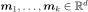 and
, there is
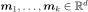 and
 such that:
such that:
where
 ,
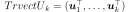 and
,
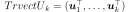 and
 and
and
 is the symmetric matrix:
is the symmetric matrix:
A Gaussian process is entirely defined by its mean function
 and its
covariance function (or correlation function
and its
covariance function (or correlation function  ).
).
-
isStationary()¶ Test whether the process is stationary or not.
Returns: isStationary : bool
True if the process is stationary.
Notes
A process
 is stationary if its distribution is invariant by
translation:
is stationary if its distribution is invariant by
translation:  ,
,
 ,
,
 , we have:
, we have:
-
isTrendStationary()¶ Tell if the process is trend stationary or not.
Returns: isTrendStationary : bool
True if the process is trend stationary.
-
setDescription(description)¶ Set the description of the process.
Parameters: description : sequence of str
Description of the process.
-
setName(name)¶ Accessor to the object’s name.
Parameters: name : str
The name of the object.
-
setSamplingMethod(samplingMethod)¶ Set the used method for getRealization.
Available parameters are :
- 0 : Cholesky factor sampling (default method)
- 1 : H-Matrix method (if H-Mat available)
- 2 : Gibbs method (in dimension 1 only)
Parameters: samplingMethod : int
Fix a method for sampling.
-
setShadowedId(id)¶ Accessor to the object’s shadowed id.
Parameters: id : int
Internal unique identifier.
-
setTimeGrid(timeGrid)¶ Set the time grid of observation of the process.
Returns: timeGrid :
RegularGridTime grid of observation of the process when the mesh associated to the process can be interpreted as a
RegularGrid. We check if the vertices of the mesh are scalar and are regularly spaced in but we don’t check if the connectivity of the mesh is conform
to the one of a regular grid (without any hole and composed of ordered
instants).
-
setVisibility(visible)¶ Accessor to the object’s visibility state.
Parameters: visible : bool
Visibility flag.